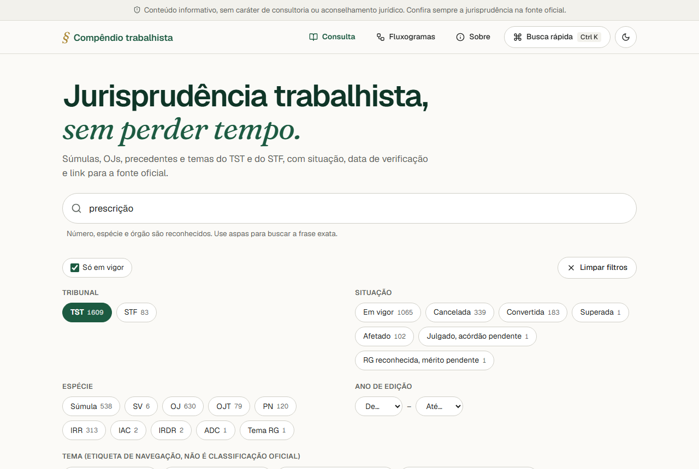
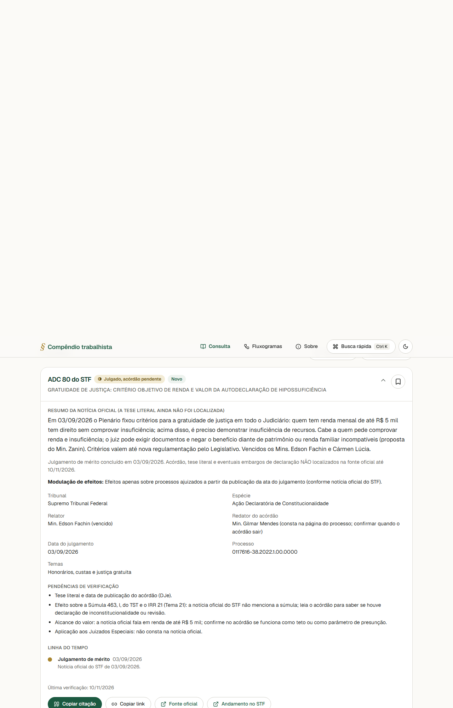
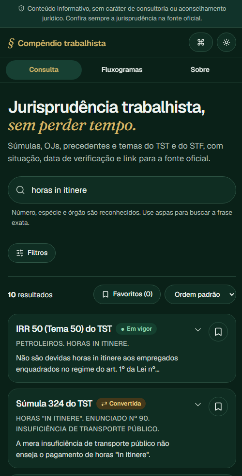

Case de portfólio
Uma ferramenta da minha rotina, aberta para todo mundo.
Eu consultava súmulas e orientações do TST dezenas de vezes por semana, em abas diferentes. Juntei tudo em uma ferramenta de busca e, agora, ela é pública e gratuita.
- Direito do Trabalho
- Design e desenvolvimento
- Site estático, sem coleta de dados
O problema
Quem trabalha com Direito do Trabalho vive de consultar entendimentos do TST e do STF. Os sites oficiais são completos, mas lentos para o dia a dia: cada tipo de verbete mora em um lugar, o status (em vigor, cancelada, convertida) pede atenção extra e montar uma citação certa toma tempo.
Pior: é fácil citar algo que já foi cancelado. Em peça, esse erro custa credibilidade.
A solução
Um site de consulta rápida que reúne 1.692 verbetes em um só lugar, com busca instantânea e uma regra que me guiou em todas as decisões: nada aparece sem dizer a situação, a data de verificação e a fonte oficial.

O que ele faz
- Entende como advogado procura. Digite
331,OJ 191,SDI-1 54outema 1389e o número exato vem primeiro; use aspas para frase exata. - Busca rápida com
Ctrl K/⌘K, de qualquer tela. - Status que não se confunde: cada situação tem nome e símbolo, não só cor.
- Citação pronta em formato forense ou ABNT, com o link da fonte oficial.
- Linha do tempo de cada verbete, favoritos e fluxogramas de navegação.
- Tudo na URL: mando o link e a pessoa abre a mesma busca, com os mesmos filtros.


Decisões de design
- Honestidade antes de tudo. Onde a tese ainda não saiu (como na ADC 80), o site mostra um resumo da notícia oficial, diz que a tese literal não foi localizada e lista as pendências. Prefiro um aviso a uma certeza inventada.
- Identidade do meu site. Verde-noite, dourado como detalhe, Geist nos textos e Fraunces itálico na assinatura, com o § como marca.
- Jurídico, mas leve. Leitura confortável, alvos de toque generosos, contraste conferido e navegação inteira pelo teclado.
- Sem coleta de dados. Favoritos e tema ficam só no navegador de quem usa. Não há servidor nem análise de uso.
- Aviso sempre visível: conteúdo informativo, sem caráter de consultoria; confira na fonte oficial.
Como foi feito
Site estático (Vite, React, TypeScript e Tailwind), com busca no próprio navegador (MiniSearch) e busca rápida adaptada de um componente do 21st.dev. Os dados são arquivos JSON versionados; a publicação é automática pelo GitHub Pages. O JavaScript inicial tem cerca de 67 KB comprimido, e os verbetes carregam em paralelo.
Processo e limites
O ponto de partida foi um compêndio interno do escritório. Para a versão pública, criei um repositório novo, sem histórico, e levei só jurisprudência oficial: nada de casos, clientes, regras ou fluxos internos. Antes de publicar, rodei uma varredura de padrões sensíveis e conferi o histórico do git.
A base geral foi verificada em 22/09/2026 e os itens novos (ADC 80 e Tema 1389) em 10/11/2026. O que ainda falta levantar está descrito de forma aberta no changelog.